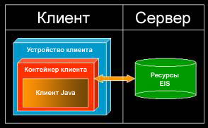
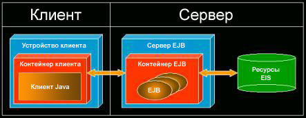
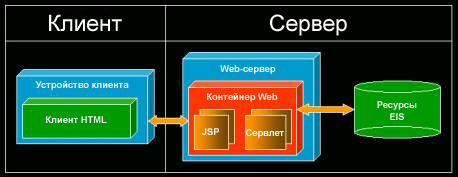
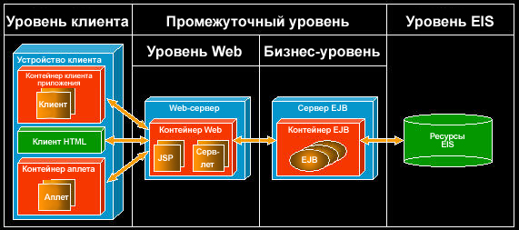

| Концепция: Конфигурации развертывания J2EE |
 |
|
| Связанные элементы |
|---|
ВведениеПлатформа J2EE поддерживает разработку и развертывание множества стандартных конфигураций развертывания. Эти стандартные конфигурации требуют принятия большого числа эвристических решений, помимо непосредственной разработки приложений. В следующих разделах приведены описания наиболее распространенных конфигураций развертывания с информацией об их достоинствах и недостатках. Если вы еще не знакомы с концепциями J2EE, прочтите о них в разделе Обзор Java 2 Platform Enterprise Edition (J2EE), прежде чем продолжить работу. Автономная конфигурация развертыванияПервая конфигурация развертывания показана на рисунке 1. В этой конфигурации нет ни контейнера Web, ни контейнера EJB; клиент обращается к ресурсам EIS напрямую и сам отвечает за обработку любой логики презентаций, бизнес-логики и логики интеграции.  Рисунок 1. Автономная конфигурация развертывания На первый взгляд, данная конфигурация выглядит привлекательной для приложений, предоставляющих простые средства управления данными, хранящимися в ресурсах EIS. Однако у этой конфигурации есть несколько недостатков. Изменения в ресурсах EIS могут серьезно повлиять на реализацию приложения, которая часто напрямую зависит от внутренней структуры каждого ресурса EIS, например структуры таблиц баз данных. Любое изменение в приложении требует полного обновления приложения для каждого пользователя - в конфигурации не предусмотрен центральный сервер, на котором можно было бы развернуть приложение, чтобы клиенты немедленно получали доступ ко всем исправлениям. Кроме того, такая конфигурация развертывания не способствует разграничению зон ответственности. Например, логика презентаций и бизнес-логика часто бывают тесно взаимосвязаны, что затрудняет поддержку и обслуживание приложений. Однако настоящие проблемы, связанные с этой конфигурацией развертывания, появляются, когда вы решите масштабировать приложение. Производительность клиентских рабочих станций ограничена, поэтому нагрузку следует распределять среди нескольких компьютеров. Однако автономная конфигурация не предназначена для поддержки распределенной обработки. Кроме того, когда вы попытаетесь организовать поддержку нескольких клиентов, одновременно обращающихся к ресурсам EIS, то обнаружите, что производительность приложений ограничена самим ресурсом EIS, например числом параллельных соединений с базами данных. Конфигурация развертывания с EJB-центромКонфигурация развертывания с EJB-центром показана на рисунке 2. В этой конфигурации между клиентским контейнером и ресурсами EIS находится контейнер EIS; контейнер Web отсутствует. Логика презентаций находится на клиенте, а бизнес-логика - в объектах EJB. В отличие от прямого доступа к ресурсам EIS, все запросы клиентов контролируются соответствующими объектами EJB. Клиенты, таким образом, защищены от изменений в ресурсах EIS.  Рисунок 2. Конфигурация развертывания с EJB-центром Конфигурация развертывания с EJB-центром избавляет от многих недостатков, присущих автономной конфигурации развертывания. С точки зрения масштабируемости, реализация платформы J2EE может распределять нагрузку по нескольким компьютерам. Кроме того, за эффективное использование ограниченных ресурсов, таких как соединения с базами данных, отвечает контейнер EJB. Применительно к поддержке и обслуживанию приложений, эта конфигурация способствует разграничению логики презентаций и бизнес-логики. Однако один из недостатков конфигурации развертывания с EJB-центром заключается в том, что даже незначительные изменения в пользовательском интерфейсе требуют полного обновления приложения для каждого пользователя. Хотя бизнес-логику, заключенную внутри объектов EJB, можно заново развернуть на сервере (предоставив тем самым пользователям немедленный доступ ко всем изменениям), это не распространяется на логику презентаций. Это неудобно, поскольку внешний вид и характеристики приложений могут изменяться весьма часто. Конфигурация развертывания с Web-центромКонфигурация развертывания с Web-центром показана на рисунке 3. В этой конфигурации между клиентским контейнером и ресурсами EIS находится контейнер Web; контейнер EJB отсутствует. И логика презентаций, и бизнес-логика обрабатываются элементами контейнера Web (JSP и сервлетами). В этой конфигурации на клиенте применяется простой язык описаний, такой как HTML, хотя может применяться и XML или WML.  Рисунок 3. Конфигурация развертывания с Web-центром Конфигурация развертывания с Web-центром в большей степени направлена на поддержку внешнего вида приложения и в меньшей - на поддержку бизнес-логики. Такая конфигурация поддерживает частые изменения внешнего вида приложения и находит сегодня широкое применение. Конфигурация развертывания с Web-центром обладает рядом достоинств. Во-первых, изменения в ресурсах EIS не влияют на клиентов, поскольку те не обращаются к этим ресурсам напрямую. Во-вторых, можно заново развернуть все приложение без необходимости выполнять какое-либо обновление для пользователей, поскольку приложение полностью находится на сервере. Однако, в то время как применение объектов EJB иногда считается неоправданным для задания, отказ от их применения зачастую приводит к тем же проблемам, что и в случае автономной конфигурации развертывания. Конкретно, эта конфигурация не способствует четкому разграничению ответственности между логикой презентаций и бизнес-логикой, из-за чего могут появляться тесно связанные друг с другом элементы, затрудняющие поддержку и обслуживание приложения. Кроме того, все проблемы масштабируемости, характерные для автономной конфигурации развертывания, возникают и в случае архитектуры с Web-центром. Многоуровневая конфигурация развертыванияМногоуровневая конфигурация развертывания показана на рисунке 4. Эта конфигурация содержит и контейнер Web, и контейнер EJB, и она сочетает в себе все достоинства предыдущих конфигураций развертывания и отсутствие их недостатков. Логика презентаций обрабатывается элементами контейнера Web, а бизнес-логика - объектами EJB контейнера EJB.  Рисунок 4. Многоуровневая конфигурация развертывания Изменения в ресурсах EIS не влияют на клиентов, поскольку те не обращаются к этим ресурсам напрямую. Кроме того, можно заново развернуть все приложение без необходимости выполнять какое-либо обновление для пользователей, поскольку приложение полностью находится на сервере. С точки зрения масштабируемости, обработка может быть распределенной. Также с точки зрения масштабируемости, за эффективное использование ограниченных ресурсов, таких как соединения с базами данных, отвечает контейнер EJB. Применительно к поддержке и обслуживанию приложений, эта конфигурация способствует четкому разграничению зон ответственности. Логика презентаций отделена от ресурсов EIS, а бизнес-логика - от внешнего вида приложений. Это четкое разграничение позволяет распределить задачи между разработчиками разных специальностей и разрабатывать логику презентаций и бизнес-логику отдельно друг от друга. Многоуровневая конфигурация развертывания также упрощает перенос с одного клиентского устройства (например, Web-браузера) на другой (например, PDA). При этом не требуется полностью переписывать приложение заново, поскольку бизнес-логика, инкапсулированная в объектах EJB, остается без изменений и может использоваться "как есть". Подводя итог, отметим, что существует несколько конфигураций развертывания, каждая из которых имеет свои плюсы и минусы. Одна из целей, преследовавшихся при разработке платформы J2EE, - обеспечить достаточную гибкость платформы, чтобы она могла поддерживать любую конфигурацию развертывания, считающуюся подходящей для организации, и в то же время была достаточно приспособленной для нужд предприятия. |
© Copyright IBM Corp. 1987, 2006. Все права защищены.. |